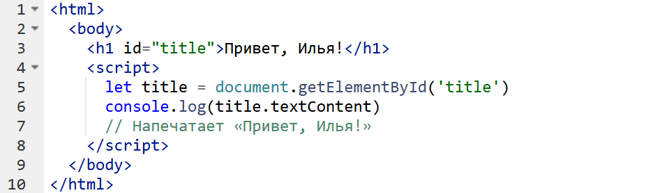
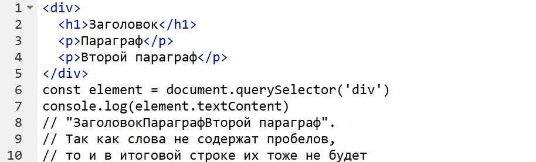
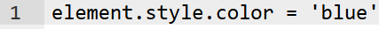
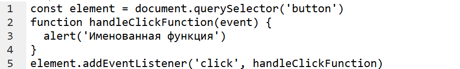
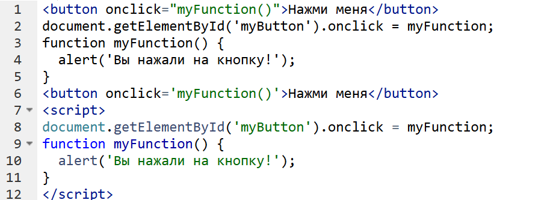
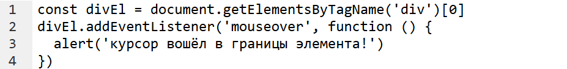

Что такое DOM?
Современные веб-сайты — это сложные и динамичные приложения, взаимодействующие с пользователями в реальном времени. Основа для работы с содержимым и структурой таких сайтов — DOM, Document Object Model, или объектная модель документа.
DOM (Document Object Model) — это специальная древовидная структура, которая позволяет управлять HTML-разметкой из JavaScript-кода.
Дерево DOM для этой страницы будет выглядеть следующим образом:
Все компоненты упорядочены в DOM иерархическим образом, где каждый компонент представляет отдельный узел. То
есть каждый элемент, например, элемент div, представляет собой узел. Но также и текст внутри элемента представляет
отдельный узел.
есть каждый элемент, например, элемент div, представляет собой узел. Но также и текст внутри элемента представляет
отдельный узел.
Существует следующие виды узлов:
Element html - элемент
Attr атрибут html - элемента
Document корневой узел html - документа
DocumentType DTD или тип схемы XML - документа
DocumentFragment - место для временного хранения частей документа
EntityReference - ссылка на сущность XML-документа
ProcessingInstruction - инструкция обработки веб-страницы
Comment - элемент комментария
Text - текст элемента
CDATASection - секция CDATA в документе XML
Entity - необработанная сущность DTD
Notation - нотация, объявленная в DTD
Attr атрибут html - элемента
Document корневой узел html - документа
DocumentType DTD или тип схемы XML - документа
DocumentFragment - место для временного хранения частей документа
EntityReference - ссылка на сущность XML-документа
ProcessingInstruction - инструкция обработки веб-страницы
Comment - элемент комментария
Text - текст элемента
CDATASection - секция CDATA в документе XML
Entity - необработанная сущность DTD
Notation - нотация, объявленная в DTD
Для работы со структурой DOM в JavaScript предназначен объект document, который определен в глобальном объекте
window. Объект document предоставляет ряд свойств и методов для управления элементами страницы.
window. Объект document предоставляет ряд свойств и методов для управления элементами страницы.
Свойства
Document позволяет обратиться к определенным элементам веб-страницы через свойства:
documentElement - предоставляет доступ к корневому элементу html
body - предоставляет доступ к элементу body на веб-странице
images - содержит коллекцию всех объектов изображений элементов img
links - содержит коллекцию ссылок элементов a, у которых определен атрибут href
anchors - предоставляет доступ к коллекции элементов a, у которых определен атрибут name
forms - содержит коллекцию всех форм на веб-странице
Эти свойства не предоставляют доступ ко всем элементам, однако позволяют получить наиболее часто используемые
элементы на веб-странице.
Получим корневой узел документа:
Методы documentElement - предоставляет доступ к корневому элементу html
body - предоставляет доступ к элементу body на веб-странице
images - содержит коллекцию всех объектов изображений элементов img
links - содержит коллекцию ссылок элементов a, у которых определен атрибут href
anchors - предоставляет доступ к коллекции элементов a, у которых определен атрибут name
forms - содержит коллекцию всех форм на веб-странице
Эти свойства не предоставляют доступ ко всем элементам, однако позволяют получить наиболее часто используемые
элементы на веб-странице.
Получим корневой узел документа:
var container = document.documentElement;
• getElementById — поиск элемента по идентификатору;
• getElementsByClassName — поиск элементов по названию класса;
• getElementsByTagName — поиск элементов по названию тега;
• querySelector — поиск первого элемента, подходящего под CSS-селектор;
• querySelectorAll — поиск всех элементов подходящих под CSS-селектор.
• getElementsByClassName — поиск элементов по названию класса;
• getElementsByTagName — поиск элементов по названию тега;
• querySelector — поиск первого элемента, подходящего под CSS-селектор;
• querySelectorAll — поиск всех элементов подходящих под CSS-селектор.
Браузер создаёт DOM на основе HTML-кода страницы. Затем на основе DOM и других структур, браузер рисует страницу
пользователю. При изменении DOM, браузер анализирует это и обновляет страницу.
DOM и страница, которую видит пользователь, связаны. Если изменишь одно, то изменится и второе.
Браузер превращает эту разметку в JavaScript представление, сохраняя при этом вложенность и свойства каждого HTML
-элемента.
Каждый тег представляет собой узел дерева. У каждого узла могут быть дочерние узлы — таким образом сохраняется
информация о вложенности тегов.
пользователю. При изменении DOM, браузер анализирует это и обновляет страницу.
DOM и страница, которую видит пользователь, связаны. Если изменишь одно, то изменится и второе.
Браузер превращает эту разметку в JavaScript представление, сохраняя при этом вложенность и свойства каждого HTML
-элемента.
Каждый тег представляет собой узел дерева. У каждого узла могут быть дочерние узлы — таким образом сохраняется
информация о вложенности тегов.
Дерево состоит из обычных и текстовых узлов. Обычные узлы — это HTML-теги, а текстовые узлы — текст внутри тегов.
Обычный узел называется Element, и он содержит в себе описание тега, атрибутов тега и обработчиков. Если изменить
описание — изменится и HTML-код этого элемента (возможно что-то даже изменится на экране. Например, если поменять
цвет шрифта).
У любого узла есть один родительский узел и дочерние. Родительский узел — элемент, в который вложен текущий узел, он
может быть только один. Дочерние — узлы, которые вложены в текущий узел.
Это правило не работает только в двух случаях:
• корневой узел — у такого узла нет родителя;
• текстовый узел — у таких узлов нет дочерних узлов, только родитель. Последний уровень любого DOM-дерева состоит из
текстовых узлов.
Обычный узел называется Element, и он содержит в себе описание тега, атрибутов тега и обработчиков. Если изменить
описание — изменится и HTML-код этого элемента (возможно что-то даже изменится на экране. Например, если поменять
цвет шрифта).
У любого узла есть один родительский узел и дочерние. Родительский узел — элемент, в который вложен текущий узел, он
может быть только один. Дочерние — узлы, которые вложены в текущий узел.
Это правило не работает только в двух случаях:
• корневой узел — у такого узла нет родителя;
• текстовый узел — у таких узлов нет дочерних узлов, только родитель. Последний уровень любого DOM-дерева состоит из
текстовых узлов.
document.getElementById()
Метод объекта document, который позволяет найти элемент на веб-странице по его идентификатору (атрибут id).
Возвращает Element или null, если ничего не нашлось.
Возвращает Element или null, если ничего не нашлось.

Метод работает с DOM, который связан с HTML-разметкой. Если в HTML есть тег с атрибутом id, то его можно получить из
JavaScript с помощью метода getElementById().
Спецификация HTML требует, чтобы в рамках одной страницы значения атрибутов id были уникальными. За счёт этого и
работает метод getElementById() — элемент с искомым идентификатором или один, или его нет. Такой поиск работает
очень быстро.
JavaScript с помощью метода getElementById().
Спецификация HTML требует, чтобы в рамках одной страницы значения атрибутов id были уникальными. За счёт этого и
работает метод getElementById() — элемент с искомым идентификатором или один, или его нет. Такой поиск работает
очень быстро.
document.querySelector()
Метод определён для объекта document и любого HTML-элемента (Element) страницы. Позволяет найти элемент по CSS
-селектору среди дочерних. Если элементов несколько, то вернётся первый подходящий. Если подходящих элементов нет,
то вернёт null.
Метод принимает один параметр — CSS-селектор в виде строки. Если передан не CSS-селектор, то система выбросит
ошибку.
Можно выбрать первый элемент внутри div :
-селектору среди дочерних. Если элементов несколько, то вернётся первый подходящий. Если подходящих элементов нет,
то вернёт null.
Метод принимает один параметр — CSS-селектор в виде строки. Если передан не CSS-селектор, то система выбросит
ошибку.
Можно выбрать первый элемент внутри div :

Метод работает с DOM, который связан с HTML-разметкой. Каждый HTML-элемент имеет родительские и дочерние
элементы:
Родители — это элементы, которые содержат текущий элемент. В примере выше у первого элемента p есть два
родительских элемента — div и body.
элементы:
Родители — это элементы, которые содержат текущий элемент. В примере выше у первого элемента p есть два
родительских элемента — div и body.
querySelectorAll()
Метод позволяет получить все DOM-элементы, подходящие под CSS-селектор. Определён для объекта document и любого
HTML-элемента исключениемик (Element) страницы. Позволяет найти все элементы по CSS-селектору среди дочерних.
CSS-селектор передаётся в виде параметра. Этот метод используется в работе очень часто.
Возвращает похожую на массив статическую коллекцию NodeList с найденными элементами. Если элементов не нашлось,
то коллекция будет пустая, то есть с размером 0. Метод принимает один параметр — CSS-селектор в виде строки. Можно
выбрать все элементы внутри div.
HTML-элемента исключениемик (Element) страницы. Позволяет найти все элементы по CSS-селектору среди дочерних.
CSS-селектор передаётся в виде параметра. Этот метод используется в работе очень часто.
Возвращает похожую на массив статическую коллекцию NodeList с найденными элементами. Если элементов не нашлось,
то коллекция будет пустая, то есть с размером 0. Метод принимает один параметр — CSS-селектор в виде строки. Можно
выбрать все элементы внутри div.
Метод работает с DOM, который связан с HTML-разметкой. Каждый HTML-элемент имеет родительские и дочерние
элементы:
Родители — это элементы, которые содержат текущий элемент. В примере выше у первого элемента p есть два
родительских элемента — div и body.
элементы:
Родители — это элементы, которые содержат текущий элемент. В примере выше у первого элемента p есть два
родительских элемента — div и body.
Свойство innerHTML
Свойство innerHTML позволяет считать содержимое элемента в виде HTML-строки или установить новый HTML.
Новое значение HTML необходимо передавать в виде строки, и оно заменит текущее содержимое элемента. При передаче
невалидной HTML-строки будет выброшена ошибка. HTML-строкой является строка, которая содержит валидную HTML
-разметку. В innerHTML нельзя передать DOM-элемент.
Новое значение HTML необходимо передавать в виде строки, и оно заменит текущее содержимое элемента. При передаче
невалидной HTML-строки будет выброшена ошибка. HTML-строкой является строка, которая содержит валидную HTML
-разметку. В innerHTML нельзя передать DOM-элемент.
Браузер предоставляет разработчику возможность управлять содержимым на странице и менять его как угодно.
innerHTML — самый простой способ считать или изменить HTML-содержимое элемента. Это свойство использует строки,
что даёт возможность легко менять и очищать содержимое элементов.
Когда в innerHTML присваивается новое значение, всё предыдущее содержимое удаляется и создаётся новое, что
приводит к перерисовке страницы.
Обращение к свойству innerHTML вернёт содержимое элемента в виде HTML-строки. Просмотреть или изменить
содержимое можно у всех элементов, включая и . Присвоение нового значения к свойству очистит всё текущее
содержимое и заменит его новым HTML.
innerHTML — самый простой способ считать или изменить HTML-содержимое элемента. Это свойство использует строки,
что даёт возможность легко менять и очищать содержимое элементов.
Когда в innerHTML присваивается новое значение, всё предыдущее содержимое удаляется и создаётся новое, что
приводит к перерисовке страницы.
Обращение к свойству innerHTML вернёт содержимое элемента в виде HTML-строки. Просмотреть или изменить
содержимое можно у всех элементов, включая и . Присвоение нового значения к свойству очистит всё текущее
содержимое и заменит его новым HTML.
В результате в документ будет вставлен HTML:
Так как в divEl находится объект DOM-элемента, то при присвоении в innerHTML он приведётся к строке, в результате в
элемент вставится строка.
элемент вставится строка.
Если передать в innerHTML строку с невалидным HTML, то будет выброшена ошибка. Несмотря на то, что с помощью
innerHTML можно вставить любой HTML, существуют некоторые ограничения, связанные с безопасностью веб-
приложений.
innerHTML можно вставить любой HTML, существуют некоторые ограничения, связанные с безопасностью веб-
приложений.
Свойство textContent
Свойство textContent позволяет считывать или задавать текстовое содержимое элемента. Обращение к свойству вернёт
строку, которая будет состоять из текстового содержимого всех вложенных элементов, даже если они скрыты с помощью
CSS и не видны на экране.
строку, которая будет состоять из текстового содержимого всех вложенных элементов, даже если они скрыты с помощью
CSS и не видны на экране.
Свойство innerText
Работает так же, но не включает в себя скрытые элементы.
Для считывания и изменения текстового содержимого браузер предоставляет свойства innerText и textContent. Запись
значения работает идентично для обоих. Значение, которое возвращается при чтении свойств, отличается. TextContent
возвращает строку с содержимым всех вложенных потомков, вне зависимости от того, скрыты они или нет.
InnerText же возвращает содержимое только видимых элементов.
Обращение к свойству textContent вернёт текстовое содержимое элемента. Если внутри элемента находятся дочерние
узлы, то результат будет являться конкатенацией (объединением) вызовов textContent для всех этих узлов.
Для считывания и изменения текстового содержимого браузер предоставляет свойства innerText и textContent. Запись
значения работает идентично для обоих. Значение, которое возвращается при чтении свойств, отличается. TextContent
возвращает строку с содержимым всех вложенных потомков, вне зависимости от того, скрыты они или нет.
InnerText же возвращает содержимое только видимых элементов.
Обращение к свойству textContent вернёт текстовое содержимое элемента. Если внутри элемента находятся дочерние
узлы, то результат будет являться конкатенацией (объединением) вызовов textContent для всех этих узлов.

Чтобы изменить текст в элементе, присвойте новое значение свойству textContent. Установка нового текста с помощью
textContent полностью удалит всё старое содержимое и запишет новое текстовое значение. Если внутри элемента были
другие вложенные потомки, то все они удалятся.
textContent полностью удалит всё старое содержимое и запишет новое текстовое значение. Если внутри элемента были
другие вложенные потомки, то все они удалятся.
Свойство style
Свойство style получает и устанавливает инлайновые стили элемента, то есть те, что записываются через HTML-атрибут
style. С помощью него можно управлять стилем элемента. Специфичность этого свойства такая же, как у атрибута style.
Чтобы получить значения инлайновых стилей с помощью свойства style, можем записать:
style. С помощью него можно управлять стилем элемента. Специфичность этого свойства такая же, как у атрибута style.
Чтобы получить значения инлайновых стилей с помощью свойства style, можем записать:
В значение inlineStyles запишется объект SSStyleDeclaration, который будет содержать в себе все инлайновые стили
элемента element.
Чтобы задать стили для элемента можно использовать несколько способов:
• Через cssText, чтобы указать несколько свойств разом (этим же эффектом обладает установка стиля через setAttribute()).
• Через отдельные свойства в style.[propertyName].
Следующие две записи работают одинаково и устанавливают несколько стилей в одном выражении:
элемента element.
Чтобы задать стили для элемента можно использовать несколько способов:
• Через cssText, чтобы указать несколько свойств разом (этим же эффектом обладает установка стиля через setAttribute()).
• Через отдельные свойства в style.[propertyName].
Следующие две записи работают одинаково и устанавливают несколько стилей в одном выражении:
Следующая — устанавливает значение определённого свойства, оставляя другие значения стиля нетронутыми:

Свойство style — это механизм для работы со стилями на элементе. С его помощью можно управлять отображением
элементов в «рантайме», то есть во время выполнения скрипта.
элементов в «рантайме», то есть во время выполнения скрипта.
Этот механизм позволяет «перетирать» стили, описанные в CSS-таблицах, так как специфичность стилей в атрибуте style
выше (за исключением стилей с !important).
Чтобы указать значение конкретного CSS-свойства, мы можем использовать одноимённое отображение в style:
выше (за исключением стилей с !important).
Чтобы указать значение конкретного CSS-свойства, мы можем использовать одноимённое отображение в style:
Имена свойств в style.[propertyName] записываются в camelCase, в отличие от CSS-свойств, которые записываются через дефис.
Таким образом font-family превращается в fontFamily, а, например, background-color — в backgroundColor.
Таким образом font-family превращается в fontFamily, а, например, background-color — в backgroundColor.
.addEventListener()
Добавляет элементу действие, которое будет выполнено после срабатывания события. Например, на клик мышки или нажатие клавиши.
Найдём первую кнопку на странице и будем выводить сообщение в консоль, когда произошёл клик по этой кнопке.
Найдём первую кнопку на странице и будем выводить сообщение в консоль, когда произошёл клик по этой кнопке.
При вызове функции, в неё передаётся специальный объект (в примере выше — event), который у разных типов событий разный.
Например, у событий нажатия клавиши есть код клавиши, а у событий перемещения мыши — координаты.
Функция может быть объявлена ранее:
Например, у событий нажатия клавиши есть код клавиши, а у событий перемещения мыши — координаты.
Функция может быть объявлена ранее:

Скопировать
А может быть анонимной:
А может быть анонимной:
Заранее созданные функции обычно используют, когда функция содержит в себе много кода или к ней нужно ссылаться несколько раз.
Например, когда нужно отписаться от события позже. Для отписки используется метод элемента Element.removeEventListener().
Альтернативный способ отписки от события можно реализовать с помощью объекта AbortController. Подробнее о нём читайте в разделе
«На практике».
Анонимные функции удобно использовать при быстрой разработке или когда обработчик создаётся в одном единственном месте и
выносить его в отдельную именованную функцию — дольше, чем писать код самой этой функции. В этом случае очень часто используют
короткую, стрелочную запись функции:
Например, когда нужно отписаться от события позже. Для отписки используется метод элемента Element.removeEventListener().
Альтернативный способ отписки от события можно реализовать с помощью объекта AbortController. Подробнее о нём читайте в разделе
«На практике».
Анонимные функции удобно использовать при быстрой разработке или когда обработчик создаётся в одном единственном месте и
выносить его в отдельную именованную функцию — дольше, чем писать код самой этой функции. В этом случае очень часто используют
короткую, стрелочную запись функции:
Сигнатура функции выглядит следующим образом:
element — любой HTMLElement на странице.
eventType — строка, содержащая название события. Наиболее популярные события 'click', 'change', 'submit', 'keydown', 'keyup',
'mousemove', 'mouseenter', 'mouseleave'.
handler — функция, которая будет вызвана, когда событие произойдёт.
options/capture — необязательный параметр, который описывает дополнительные свойства для срабатывания события.
capture — включает или выключает захват события элементом, на который установлен обработчик. Это значит, что событие сначала
сработает на элементе и только потом сработает на всех вложенных элементах. Принимает значение true или false
options: { capture: bool, passive: bool, once: bool, signal: AbortSignal } — при передаче объекта аргумент будет распознан как объект настроек,
так можно установить больше параметров.
passive — значение true означает что внутри handler никогда не будет вызвана функция event.preventDefault(), если функция
event.preventDefault() всё-таки вызвана, браузер должен её игнорировать и выводить предупредительное сообщение в консоль.
once — включает автоматическую отписку от события после первого срабатывания.
signal — передаётся ссылка на объект сигнала AbortSignal, который позволяет отписаться от события.
Варианты вызова функции с разными параметрами:
eventType — строка, содержащая название события. Наиболее популярные события 'click', 'change', 'submit', 'keydown', 'keyup',
'mousemove', 'mouseenter', 'mouseleave'.
handler — функция, которая будет вызвана, когда событие произойдёт.
options/capture — необязательный параметр, который описывает дополнительные свойства для срабатывания события.
capture — включает или выключает захват события элементом, на который установлен обработчик. Это значит, что событие сначала
сработает на элементе и только потом сработает на всех вложенных элементах. Принимает значение true или false
options: { capture: bool, passive: bool, once: bool, signal: AbortSignal } — при передаче объекта аргумент будет распознан как объект настроек,
так можно установить больше параметров.
passive — значение true означает что внутри handler никогда не будет вызвана функция event.preventDefault(), если функция
event.preventDefault() всё-таки вызвана, браузер должен её игнорировать и выводить предупредительное сообщение в консоль.
once — включает автоматическую отписку от события после первого срабатывания.
signal — передаётся ссылка на объект сигнала AbortSignal, который позволяет отписаться от события.
Варианты вызова функции с разными параметрами:
У объекта event есть специальные методы, такие как preventDefault() и stopPropagation(). Остальные методы практически не
используются: preventDefault() позволяет заблокировать стандартное поведение браузера. Например, по клику на ссылке —
заблокировать переход по этой ссылке. stopPropagation() позволяет остановить распространение события по DOM-дереву.
используются: preventDefault() позволяет заблокировать стандартное поведение браузера. Например, по клику на ссылке —
заблокировать переход по этой ссылке. stopPropagation() позволяет остановить распространение события по DOM-дереву.
Onlick
Интерактивность — ключевой компонент любого современного сайта. И одним из наиболее часто используемых событий для создания
интерактивности является событие onclick. В этой статье мы подробно разберёмся, что такое событие onclick, как его использовать и
приведем примеры применения.
Событие onclick — это событие JavaScript, которое активируется, когда пользователь кликает на определенный элемент страницы. Это
может быть кнопка, ссылка, изображение или любой другой элемент, на который можно нажать.
Событие при клике на кнопку
Для привязки события к элементу используйте атрибут onclick в HTML или добавьте слушатель события в JavaScript.
интерактивности является событие onclick. В этой статье мы подробно разберёмся, что такое событие onclick, как его использовать и
приведем примеры применения.
Событие onclick — это событие JavaScript, которое активируется, когда пользователь кликает на определенный элемент страницы. Это
может быть кнопка, ссылка, изображение или любой другой элемент, на который можно нажать.
Событие при клике на кнопку
Для привязки события к элементу используйте атрибут onclick в HTML или добавьте слушатель события в JavaScript.

Изменение стилей через onclick
Можно использовать onclick, чтобы изменять стили элементов в ответ на действия пользователя.
Скрыть элементы через onclick
С помощью onclick можно показывать или скрывать различные части сайта.
Событие onclick — это мощный инструмент любого веб-разработчика. Оно позволяет делать страницы интерактивными и реагировать на
действия пользователя.
действия пользователя.
Onmouseover
Событие на HTML-элементе. Происходит, когда пользователь передвигает курсор на сам элемент или на вложенные элементы.
На события можно подписаться и выполнять JavaScript-код, когда событие произошло.
Событие является противоположным событию mouseout. Эти события часто используются в паре.
Событие на HTML-элементе. Происходит, когда пользователь передвигает курсор на сам элемент или на вложенные элементы.
На события можно подписаться и выполнять JavaScript-код, когда событие произошло.
Событие является противоположным событию mouseout. Эти события часто используются в паре.
Событие проще всего понять на демо. При событии mouseover мы устанавливаем элементу, на котором произошло событие, синий
фоновый цвет:
фоновый цвет:
Onmouseout
Событие на HTML-элементе. Происходит, когда пользователь передвигает курсор, который находится на элементе, за пределы элемента.
Событие является противоположным событию mouseover. Эти события часто используются в паре.
Событие на HTML-элементе. Происходит, когда пользователь передвигает курсор, который находится на элементе, за пределы элемента.
Событие является противоположным событию mouseover. Эти события часто используются в паре.

Событие проще всего понять на демо. При событии mouseout мы меняем цвет фигуры на случайный. Чтобы событие произошло, нужно
навести курсор на фигуру, а затем убрать его:
навести курсор на фигуру, а затем убрать его: